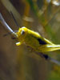
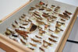
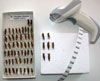
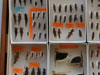
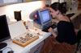

The Alexander Collections Improvement Project

With support from the NSF Biological Research Collections program, we identified, curated and databased the 24,000 grasshoppers that make up the Alexander Collection. In January of 2005, the CU Entomology Section of the Museum received a NSF Collections Improvement Grant (DBI-0447315) to curate, database and georeference the Alexander collection. These specimens were previously uncurated and housed in Schmidt boxes. With the Entomology section’s move to new facilities in 2001 and with support from this NSF grant, the Entomology section was able to properly conserve the extensive Alexander collection. The specimens are now curated, databased, and available for researchers. In addition, the data from the Alexander specimens are currently available through the Global Biodiversity Information Facility (GBIF) portal.
The curation and databasing process
1. Specimens were removed from the 250 Schmidt boxes in which they were stored and placed into collection drawers.
|
 |
2. As the specimens were transferred into the collection drawers, each specimen was given a unique bar code and the collection information associated with the specimen was entered into the database. We used Biota as our databasing program.
|
 |
3. The locality information was then georeferenced using BioGeomancer practices. During this process, over 700 unique localities were georeferenced.
|
|
| 4. As most of the specimens did not have species identification labels, nearly all of the 24,000 were then identified to species. |  |
5. After the specimens were identified, they were all processed through the database again in order to associate each specimen with a species identification. Specimens were then curated into the Orthoptera collection in the Entomology section.
|
 |
| 6. In the summer of 2007, Daniel Otte, from the Philadelphia Academy of Sciences, visited the collection for several weeks to verify our species identifications. |

 ©2026 CU Museum, UCB 218, University of Colorado, Boulder, Colorado 80309
©2026 CU Museum, UCB 218, University of Colorado, Boulder, Colorado 80309